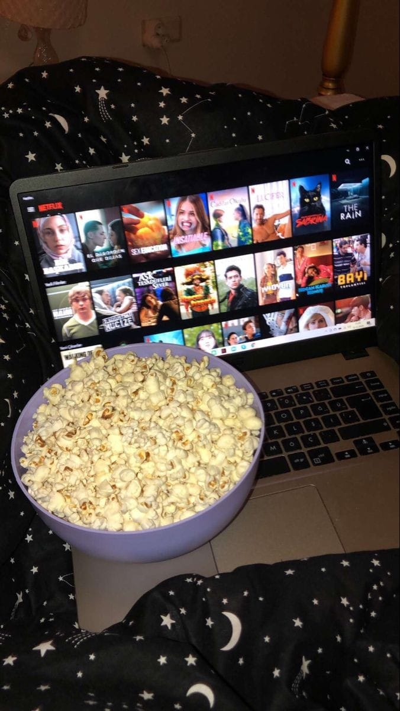
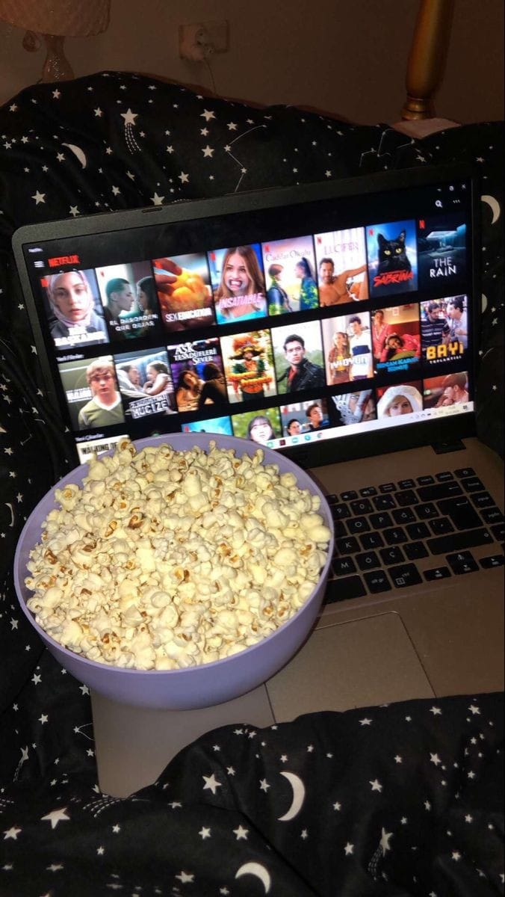

ESTUDIANTE UNIVERSITARIA CUC

 

Shadowhunters: The Mortal Instruments es el nombre de la serie de televisión producida por McG basada en la saga Cazadores de Sombras escrita por Cassandra Clare. En el día de su cumpleaños, Clary Fray (Katherine McNamara) decide visitar un club nocturno junto a su mejor amigo, Simon Lewis (Alberto Rosende); en este, es testigo de cómo un grupo de jóvenes asesinan a alguien. Ella descubre que ellos son cazadores de sombras, seres mitad ángeles y mitad humanos que protegen al mundo cazando demonios, y que ella y su madre también lo son. Al volver a casa, su madre es secuestrada y Clary acude a Jace Wayland (Dominic Sherwood), otro cazador de sombras, para encontrarla. Con el paso del tiempo, Clary comienza a conocer el mundo de los cazadores de sombras, entrena para desarrollar sus habilidades y al mismo tiempo descubre los secretos que su madre le ha estado guardando en un mundo lleno de licántropos, vampiros, seelies, demonios, brujos y otras criaturas. Simultáneamente, ella y sus amigos deberán intentar detener a Valentine Morgenstern (Alan Van Sprang), un cazador de sombras corrompido que busca conquistar el mundo apoderándose de los Instrumentos Mortales, con los que planea crear una élite de seres mitad cazadores de sombras y mitad demonios. Los actores mas relevantes son: Katherine McNamara(Clary Fray) y Dominic Sherwood (Jace Wayland) siendo los protagonistas de la serie, son unos buenos actores con un rango profesional bastante amplio, en esta serie le dan un toque de magia y amor pasional a la serie que sin duda es lo mejor.